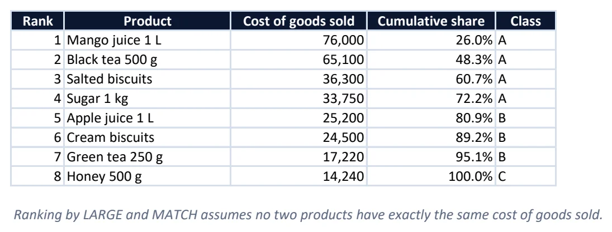

Stock problems cost money in two directions. Too little, and you turn customers away. Too much, and cash sits on shelves while goods age or expire. Many small businesses only find out which problem they have when a shelf is empty or a count does not match the book.
A well-built spreadsheet can answer the daily questions: what do I have, what should I order, what is it worth and which items matter most? This guide builds that in Excel using a made-up grocery wholesaler with eight products, followed through March 2026.
Download the example inventory workbook (.xlsx)
1. Record movements, do not overwrite balances
The most important design choice is this: never type over the quantity on hand. Record each receipt and each issue as a new row, and let a formula work out the balance. You then have a history you can check when the shelf and the sheet disagree.
The example uses these sheets:
| Sheet | What it holds |
|---|---|
| Products | One row per item: code, name, unit cost, selling price, opening stock, lead time and safety stock |
| Movements | One row per receipt or issue: date, code, type (In or Out) and quantity |
| Stock | Calculated balance, reorder status, cover and value for each item |
| ABC | Items ranked by the cost of what was sold |
Give every product a short unique code and use it everywhere. Names get typed in different ways; codes can be picked from a list. The Movements sheet has drop-down lists for the code and the type, accepts only whole quantities above zero, and shows CHECK beside a code that is not on the Products sheet. Pasting can bypass drop-down rules, which is why the visible check matters.
2. Work out stock on hand
The balance is opening stock, plus receipts, minus issues. SUMIFS collects the movements for each code:
Received =SUMIFS(Movements!$D$2:$D$1000, Movements!$B$2:$B$1000, A5, Movements!$C$2:$C$1000, "In")
Issued =SUMIFS(Movements!$D$2:$D$1000, Movements!$B$2:$B$1000, A5, Movements!$C$2:$C$1000, "Out")
On hand =C5+D5-E5Here C5 is opening stock, D5 receipts and E5 issues. A negative balance is highlighted, because it means a receipt is missing, an issue was entered twice or the opening figure was wrong. Do not hide it with a formula that shows zero.
Decide how to record other events. Customer returns, supplier returns, damaged goods and count corrections all change stock. Add clear types for them, or at least a note column, so that a write-off is not mistaken for a sale. The formulas must then include each new type.

3. Set a reorder point
A reorder point tells you when to place an order, early enough for it to arrive before you run out. A common simple form is:
Reorder point = average daily use × lead time in days + safety stock- Average daily use: quantity issued divided by the days in the period.
- Lead time: days from placing an order until the goods are ready to use. Use what actually happens, not only what the supplier promises.
- Safety stock: a buffer for late deliveries and busier days than usual.
Apple juice shows how it works. It sold 126 units in 31 days, about 4.06 a day. With a 5-day lead time and 40 units of safety stock, the reorder point is about 60.3. Only 34 are on hand, so the status reads Reorder. Cream biscuits (130 on hand against 145.2) and sugar (70 against 74.2) are flagged too.
The status formula checks for an empty shelf first:
=IF(F5<=0, "Out of stock", IF(F5<=H5, "Reorder", "OK"))The safety stock figures here were chosen for the example. For your own items, start with a sensible estimate, record every time you run short or carry far too much, and adjust. A single month of history is a weak basis for items with seasons, promotions or irregular orders. Statistical methods exist for setting safety stock, but they need reliable history.
A reorder point says when to order, not how much. Order quantity also depends on supplier minimums, case sizes, storage space, shelf life and available cash. Before ordering, check what is already on order, or you may buy the same stock twice. The example does not track open purchase orders; add a column for them if you place orders with long lead times.
4. Read days of cover with care
Days of cover is stock on hand divided by average daily use. Apple juice has about 8.4 days, while honey has about 36.8.
Notice that the three flagged items still show more days of cover than their lead times. They are flagged because the safety buffer is included. Cover alone would not tell you to order. It also assumes that future demand looks like the past period, which may not be true before a festival or after a price change.
5. Value your stock
Multiply the quantity on hand by unit cost, not selling price:
Stock value = quantity on hand × unit costIn the example, stock at cost fell from 291,350 at the start of March to 173,290 at the end. You can check this against the movements:
| Step | Amount at cost |
|---|---|
| Opening stock | 291,350 |
| Add goods received | 174,250 |
| Less cost of goods issued | 292,310 |
| Closing stock | 173,290 |
The figures agree, which is a useful test for your own sheet. It works neatly here because each product has one unit cost and every issue is a sale. When purchase prices change, you need a costing method, such as weighted average or first in, first out, and a record of each receipt's cost. Ask your accountant which method your accounts should use, and do not rely on this simple example for financial statements or tax.
6. Measure turnover
Inventory turnover shows how many times average stock was sold in a period:
Average stock = (opening value + closing value) ÷ 2
Turnover = cost of goods sold ÷ average stock
Days of stock = days in the period ÷ turnoverFor March, cost of goods sold was 292,310 and average stock 232,320. Turnover is about 1.26 for the month, or about 24.6 days of stock. Do not compare a monthly turnover with someone else's yearly figure. An average of only the opening and closing values can also mislead when stock swings during the month.
You can test your own figures in the inventory turnover calculator.
7. Use ABC analysis to focus attention
Not every item deserves the same effort. ABC analysis ranks items by value used, here the cost of goods sold, and adds up their share from the top.

In this example an item is class A while the items ranked above it cover less than 70% of the total, class B while they cover less than 90%, and C after that. So four items are A, three are B and one is C. These limits are a choice, not a rule, and with only eight products the groups are rough.
A sensible use is to count and review A items more often. But do not neglect a C item just because its value is low: a cheap part can stop a job, and a slow item may be the reason a good customer visits. A single month can also rank a seasonal item wrongly.
The ranking uses LARGE and MATCH using functions that have been in Excel for many versions. If two products had exactly the same cost of goods sold, the name lookup would repeat the first one, so check for ties.
8. Count the stock and explain differences
The sheet shows what should be there. Only a count shows what is there. Many businesses count a few items on a regular cycle instead of closing for one large count.
- Agree a cut-off time so that goods moving during the count are not counted twice or missed.
- Have someone count without seeing the expected figure.
- Recount large differences.
- Look for the cause: unrecorded issues, wrong units, wrong item, damage or loss.
- Record the correction as its own movement with a reason. Do not edit past rows.
Advantages and limits of Excel for stock
Advantages: low cost if you already have Excel, formulas you can inspect, and columns you can change to fit your business.
Limits: it does not update itself when you sell, several people editing copies will create conflicting versions, there is no reliable record of who changed what in a simple file, and tracking batches, expiry dates, serial numbers or several warehouses quickly becomes difficult. If you need those, or you make many transactions a day, compare dedicated inventory or point-of-sale software.
Common mistakes
- Typing a new balance over the old one.
- Mixing units, such as cartons in one row and single pieces in the next. Choose one unit per product.
- Valuing stock at selling price.
- Treating the supplier's promised lead time as certain.
- Never revising reorder points after demand changes.
- Sorting one column without the others, which scrambles records.
- Keeping the only copy on one computer. Back it up.
Practical next steps
Start with your twenty most important products, count them, and record every movement for two weeks. Fix the recording habits before adding more items or features. To check pricing on the same items, see profit margin vs markup. For more formulas, visit the Excel formula library. A larger ready-made inventory and sales tracker is available in the shop.
Frequently asked questions
Can I manage inventory in Excel without macros?
Yes. The example uses ordinary formulas, data validation and conditional formatting, with no macros.
How do I add a new product?
Add it to the Products sheet, then add a row on the Stock sheet and extend the ABC ranges and summary formulas. Check that totals include the new row.
What if I have more than 1,000 movements?
The example formulas and drop-down rules read up to row 1000. Extend the ranges, or change the formulas to use the table's column names. Test the totals afterwards.
Why is my stock on hand negative?
Usually a receipt was not entered, an issue was entered twice, a code is wrong or the opening quantity was incorrect. Trace the movements for that code and count the item.
Should I include sales tax in unit cost?
It depends on whether you can reclaim the tax and on your accounting rules. Treat all costs the same way and confirm the approach with your accountant.
How is this different from a sales dashboard?
A stock sheet manages quantities and ordering. A dashboard summarises performance for review. The Excel dashboard guide shows how to build one.
References
- Microsoft Support: SUMIFS. Totalling movements by code and type.
- Microsoft Support: LARGE. Used to rank items for ABC analysis.
- Microsoft Support: Data validation. Limiting what can be typed in a cell.
- Microsoft Support: Conditional formatting. Highlighting reorder and negative values.
- Microsoft Support: Overview of Excel tables. How tables work.
Links checked on 25 November 2026.
The references cover the Excel features. The stock management methods are common practice described for general information; they are not accounting, tax or professional advice.